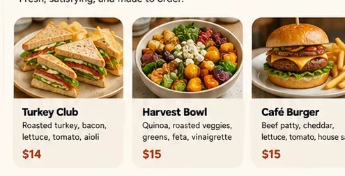

Buttermilk pancakes
Classic breakfast stack
Filter items by meal. Try adding samples to the demonstration bag.
The helpful stuff comes first: food, location, opening hours, and a clear next step.
Menus and descriptions are placeholders for a real cafe’s approved ingredients, prices, and dietary details.
Illustrative location and service information would appear here.
Actual opening hours
Verified address and parking
Connect the real online ordering provider
Explore the sample inquiry process. This form never sends, saves, or schedules anything.